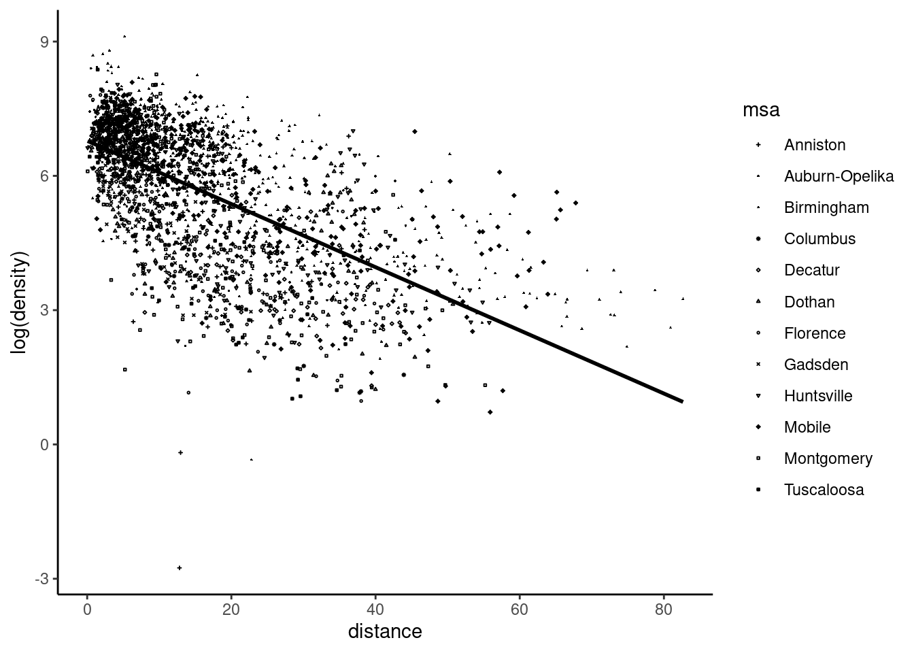

6 Non-spherical disturbances
In the first part of the book, we considered a model of the form: \(y_n = \alpha + \beta x_n + \epsilon_n\) with the hypothesis that the errors were homoskedastic: \(\mbox{V}(\epsilon_n) = \sigma_\epsilon ^ 2\) and uncorrelated: \(\mbox{E}(\epsilon_n \epsilon_m) = 0 \; \forall n \neq m\). In this case, the errors (or disturbances) are spherical and the covariance matrix of the errors \(\Omega\) is, up to a multiplicative constant \(\sigma_\epsilon^2\), the identity matrix:
\[ \Omega = \mbox{V}(\epsilon) = \mbox{E}(\epsilon\epsilon^\top) = \sigma_\epsilon ^ 2 I \]
In this chapter, we analyze cases where these hypothesis are violated. This has the following consequences concerning the results established in the first part of the book:
- the OLS estimator is still consistent: this means that \(\hat{\beta}\) estimates consistently \(\beta\) and \(\hat{\epsilon}\) estimates also consistently \(\epsilon\); this is an important result, as the residuals of the OLS estimator can therefore be used to test whether the errors are spherical or not,
- the OLS estimator is no longer BLUE, i.e., it is no longer the best linear unbiased estimator,
- there is another linear unbiased estimator (the generalized least squares, or GLS) which is more efficient (which means that it has a smaller variance) than the OLS estimator and which is the BLUE estimator when the errors are non-spherical,
- the simple formula for the variance of the OLS estimator, \(\mbox{V}(\hat{\beta}) = \sigma_\epsilon ^ 2 \left(\tilde{X}^\top \tilde{X}\right)^{-1}\) is no longer an unbiased estimator of the true covariance matrix of the OLS estimator. However, as we’ll see in this chapter, sandwich estimators, which are consistent, can be used.
Section 6.1 reviews some important cases where the errors are non-spherical. Section 6.2 presents tests that enable to detect whether the errors are spherical or not. Section 6.3 presents robust estimators of the variance of the OLS estimators. Finally, Section 6.4 is devoted to the GLS estimator.
6.1 Situations where the errors are non-spherical
As stated previously, the hypothesis of spherical disturbances implies that the errors are homoskedastic and uncorrelated. We’ll describe in the next three subsections important situations where this hypothesis is violated. In each case, we’ll establish the expression of the matrix of covariance of the errors \(\Omega\) and, for a reason that will be clear in the subsequent sections, we’ll also compute the inverse of this matrix.
Heteroskedasticity
In a linear model: \(y_n = \alpha + \beta x_n + \epsilon_n\), heteroskedasticity occurs when the conditional variance of the response \(y_n\) (the variance of \(\epsilon_n\)) is not a constant. As an example, Houthakker (1951) analyzed electric consumption in the United Kingdom, and his data set (called uk_elec) is a sample of 42 British cities.1 The response is the per capita consumption in kilowatt hours. Denoting \(c_{ni}\) the consumption of an individual \(i\) in city \(n\), the response is then \(y_n =\frac{1}{I_n}\sum_i^{I_n} c_{ni}\) where \(I_n\) is the total number of consumers in city \(n\). Then, if the standard deviation of the individual consumption is \(\sigma_c\) (the same in every city), the variance of \(y_n\) is \(\sigma_c ^ 2 / I_n\) and therefore depends on the number of consumer units of the city. Even if covariates are taken into account, it is doubtful that the conditional variance of \(y\) will be the same for every city, and a more reasonable hypothesis is that, as the unconditional variance, it is inversely proportional to the number of consumer units. With heteroskedastic but uncorrelated errors, the matrix of covariance of the errors is a diagonal matrix with non-constant diagonal terms:
\[ \Omega= \left( \begin{array}{cccc} \sigma_{1} ^ 2 & 0 & \ldots & 0 \\ 0 & \sigma_{2} ^ 2 & \ldots & 0 \\ \vdots & \vdots & \ddots & \vdots \\ 0 & 0 & \ldots & \sigma_N ^ 2 \end{array} \right) \tag{6.1}\]
The inverse of \(\Omega\) is easily obtained:
\[ \Omega ^ {-1}= \left( \begin{array}{cccc} 1 / \sigma_{1} ^ 2 & 0 & \ldots & 0 \\ 0 & 1 / \sigma_{2} ^ 2 & \ldots & 0 \\ \vdots & \vdots & \ddots & \vdots \\ 0 & 0 & \ldots & 1/ \sigma_N ^ 2 \end{array} \right) \]
and, more generally, \(\Omega^{r}\) (\(r\) being any integer or rational number) is a diagonal matrix with typical element \(\left(\sigma_n^2\right)^r\).
Correlation of the errors
Consider now the case where we have several observations from the same entity. An example is the case where the unit of observation is the individual, but siblings are observed. In this case, each observation is doubly indexed, the first index being the family and the second one the rank of the sibling’s birth. Another very important case is when the same individual (in a wide sense, it can be a household, firm, country, etc.) is observed several times, for example for different periods like years or months. Such a data set is called a panel data. In the subsequent sections, we’ll use two data sets. The first data set, called twins, is from Bonjour et al. (2003) who studied the return to education with a sample of twins. The sample contains 428 observations (214 pairs of twins), and it is reasonable to assume that, for a given pair of twins, the two errors are correlated as they partly contain unobserved characteristics that are common to both twins. The second data set, called tobinq, is from Schaller (1990) who tests the relevance of Tobins’ Q theory of investment by regressing the investment rate (the ratio of the investment and the stock of capital) to Tobin’s Q, which is the ratio of the value of the firm and the stock of capital. The data set is a panel of 188 firms observed for 35 years (from 1951 to 1985).
For such data, we’ll denote \(n = 1, 2, \ldots N\) the entity / individual index and \(t = 1, 2, \ldots T\) the index of the observation in the entity / the time period. Then, the simple linear model can be written: \(y_{nt} = \alpha + \beta x_{nt} + \epsilon_{nt}\) and it is useful to write the error term as the sum of two components:
- an entity / individual effect \(\eta_n\),
- an idiosyncratic effect \(\nu_{nt}\).
We therefore have \(\epsilon_{nt} = \eta_n + \nu_{nt}\). This leads to the so-called error-component model, which can be easily analyzed with the following hypothesis:
- the two components are homoskedastic and uncorrelated: \(\mbox{V}(\eta_n) = \sigma_{\eta} ^ 2, \forall n\), \(\mbox{V}(\nu_{nt}) = \sigma_{\nu} ^ 2, \forall n, t\) and \(\mbox{cov}(\eta_n, \nu_{nt}) = 0, \forall n, t\),
- the idiosyncratic terms for the same entity are uncorrelated: \(\mbox{E}(\nu_{nt}\nu_{ns})=0\; \forall \; n, t \neq s\),
- the two components of the errors are uncorrelated for two observations of different entities \(\mbox{cov}(\nu_{nt}, \nu_{ms})=\mbox{cov}(\eta_n, \eta_m)=0\; \forall \; n \neq m, t, s\).
With these hypotheses, we have:
\[ \left\{ \begin{array}{rcl} \mbox{E}(\epsilon_{nt}^2) &=& \sigma_\eta ^ 2 + \sigma_\nu ^ 2 \\ \mbox{E}(\epsilon_{nt}\epsilon_{mt}) &=& \sigma_\eta ^ 2 \\ \mbox{E}(\epsilon_{nt}\epsilon_{ms}) &=& 0;\ \forall \; n \neq m\\ \end{array} \right. \]
and \(\Omega\) is a block-diagonal matrix with identical blocks. For example, with \(N = 2\) and \(T = 3\):
\[ \Omega = \left( \begin{array}{cccccc} \sigma_\eta ^ 2 + \sigma_\nu ^ 2 & \sigma_\eta ^ 2 & \sigma_\eta ^ 2 & 0 & 0 & 0 \\ \sigma_\eta ^ 2 & \sigma_\eta ^ 2 + \sigma_\nu ^ 2 & \sigma_\eta ^ 2 & 0 & 0 & 0 \\ \sigma_\eta ^ 2 & \sigma_\eta ^ 2 & \sigma_\eta ^ 2 + \sigma_\nu ^ 2 & 0 & 0 & 0 \\ 0 & 0 & 0 & \sigma_\eta ^ 2 + \sigma_\nu ^ 2 & \sigma_\eta ^ 2 & \sigma_\eta ^ 2 \\ 0 & 0 & 0 & \sigma_\eta ^ 2 & \sigma_\eta ^ 2 + \sigma_\nu ^ 2 & \sigma_\eta ^ 2 \\ 0 & 0 & 0 & \sigma_\eta ^ 2 & \sigma_\eta ^ 2 & \sigma_\eta ^ 2 + \sigma_\nu ^ 2\\ \end{array} \right) \]
The blocks of this matrix can be written as, denoting \(j\) a vector of ones and \(J=jj^\top\) a square matrix of 1:
\[ \sigma^2_\nu I_T + \sigma ^ 2_\eta J_T \]
and, using Kronecker product, \(\Omega\) is:
\[ \Omega = I_N \otimes \left(\sigma^2_\nu I_T + \sigma ^ 2_\eta J_T\right) = \sigma ^ 2_\nu I_{NT} + \sigma_\eta ^ 2 I_N \otimes J_T \]
Another equivalent expression which will prove to be particularly useful is:
\[ \Omega = \sigma ^ 2_\nu \left(I_N - I_N \otimes J_T / T\right)+ (T \sigma_\eta ^ 2 + \sigma ^ 2_\nu) \left(I_N \otimes J_T / T\right) = \sigma ^ 2_\nu W + \sigma_\iota^2 B \tag{6.2}\]
where \(\sigma_\iota ^ 2 = T \sigma_\eta ^ 2 + \sigma ^ 2_\nu\). With our \(N=2\) and \(T=3\) simple case, the two matrices are:
\[ W = \left( \begin{array}{cccccc} 2/3 & - 1/3 & - 1/3 & 0 & 0 & 0 \\ - 1/3 & 2/3 & - 1/3 & 0 & 0 & 0 \\ - 1/3 & - 1/3 & 2/3 & 0 & 0 & 0 \\ 0 & 0 & 0 & 2/3 & - 1/3 & - 1/3 \\ 0 & 0 & 0 & - 1/3 & 2/3 & - 1/3 \\ 0 & 0 & 0 & - 1/3 & - 1/3 & 2/3 \\ \end{array} \right) \]
and:
\[ B = \left( \begin{array}{cccccc} - 1/3 & - 1/3 & - 1/3 & 0 & 0 & 0 \\ - 1/3 & - 1/3 & - 1/3 & 0 & 0 & 0 \\ - 1/3 & - 1/3 & - 1/3 & 0 & 0 & 0 \\ 0 & 0 & 0 & - 1/3 & - 1/3 & - 1/3 \\ 0 & 0 & 0 & - 1/3 & - 1/3 & - 1/3 \\ 0 & 0 & 0 & - 1/3 & - 1/3 & - 1/3 \\ \end{array} \right) \]
The first matrix is called the within matrix. Premultiplying a vector by \(W\) transforms it as deviations from the individual means. The second matrix is called the between matrix, and premultiplying a vector by \(B\) transforms it as a vector of individual means. These two symmetric matrices have interesting properties:
- they are idempotent, which means that \(B B = B\) and \(W W =W\). For example \(W (Wz) = Wz\), as taking the deviations from the individual means of a vector of deviations from the individual means leaves this vector unchanged,
- they are orthogonal, which means that \(W B = B W = 0\). For example \(W (Bz) = 0\) because the deviations from the individual means of a vector of individual means are zero,
- they sum to the identity matrix, \(W + B = I\). \(Wz + Bz=z\), because the sum of the deviations from the individual means of a vector and its individual means is the vector itself.
\(W\) and \(B\) therefore perform an orthogonal decomposition of a vector. One advantage of this decomposition is that it is very easy to obtain powers of \(\Omega\). For example, the inverse of \(\Omega\) is:
\[ \Omega ^ {-1} = \frac{1}{\sigma_\nu ^ 2} W + \frac{1}{\sigma_\iota ^ 2}B \]
and, more generally, for any power \(r\) (either an integer or a rational):
\[ \Omega ^ {r} = {\sigma_\nu ^ 2} ^ r W + {\sigma_\iota ^ 2} ^ rB \tag{6.3}\]
System of equations
We have seen in Section 3.7 that, for example in fields such as consumption or production analysis, it is more relevant to consider the estimation of system of equations instead of the estimation of a single equation. In matrix form, the model corresponding to the whole system was presented in Equation 3.26. We’ve seen in Section 3.7 that a first advantage of considering the whole system of equations, and not an equation in isolation, is that restrictions on coefficients that concern different equations can be taken into account using the constrained least squares estimator.
A second advantage is that, if the errors of the different equations for the same observation are correlated, these correlations can be taken into account if the whole system of equations is considered. Denoting \(\epsilon_l\) the vector of length \(N\) containing the errors for the \(l\)th equation and \(\Xi = (\epsilon_1, \epsilon_2, \ldots \epsilon_L)\) the \(N\times L\) matrix containing errors for the whole system, the covariance matrix of the errors for the system is:
\[ \Omega = \mbox{E}(\Xi \Xi^\top) =\mbox{E} \left( \begin{array}{cccc} \epsilon_1\epsilon_1^\top & \epsilon_1 \epsilon_2^\top & \ldots & \epsilon_1 \epsilon_L^\top \\ \epsilon_2\epsilon_1^\top & \epsilon_2 \epsilon_2^\top & \ldots & \epsilon_2 \epsilon_L^\top \\ \vdots & \vdots & \ddots & \vdots \\ \epsilon_L\epsilon_1^\top & \epsilon_L \epsilon_2^\top & \ldots & \epsilon_L \epsilon_L^\top \\ \end{array} \right) \] Assume that the errors of two equations \(l\) and \(m\) for the same observation are correlated and that the covariance, denoted \(\sigma_{lm}\), is constant. The variance of errors for each equation \(l\) is denoted \(\sigma_{ll}\) and may be different from one equation to another. Moreover, we assume that errors for different individuals are uncorrelated. With these hypotheses, the covariance matrix is, denoting \(I\) the identity matrix of dimension \(N\):
\[ \Omega= \left( \begin{array}{cccc} \sigma_1^2 I & \sigma_{12} I & \ldots &\sigma_{1L} I \\ \sigma_{12} I & \sigma_2^2 I & \ldots &\sigma_{2L} I \\ \vdots & \vdots & \ddots & \vdots \\ \sigma_{1L} I & \sigma_{2L} I & \ldots & \sigma_L^2 I \end{array} \right) \]
Denoting \(\Sigma\) the \(L\times L\) matrix of inter-equation variances and covariances, we have:
\[ \Sigma= \left( \begin{array}{cccc} \sigma_1^2 & \sigma_{12} & \ldots &\sigma_{1L} \\ \sigma_{12} & \sigma_2^2 & \ldots &\sigma_{2L} \\ \vdots & \vdots & \ddots & \vdots \\ \sigma_{1L} & \sigma_{2L} & \ldots & \sigma_L^2 \end{array} \right) \]
and \(\Omega=\Sigma \otimes I\). The inverse of the covariance matrix of the errors is easily obtained, as it requires only to compute the inverse of \(\Sigma\): \(\Omega ^ {-1} = \Sigma ^ {-1} \otimes I\).
6.2 Testing for non-spherical disturbances
Numerous tests have been proposed to investigate whether, in different contexts, the disturbances are spherical or not. Among them, we’ll present a family of tests that are based on OLS residuals. Even if the disturbances are non-spherical, OLS is a consistent estimator and therefore OLS’s residuals are a consistent estimate of the errors of the model. Therefore, one can use these residuals to analyze the unknown features of the errors.
Testing for heteroskedasticity
Breusch and Pagan (1979) consider the following heteroskedastic model: \(y_n = \gamma ^ \top z_n + \epsilon_n\) with \(\epsilon_n \sim \mathcal{N}(0, \sigma_n ^ 2)\). Assume that \(\sigma_n^2\) is a function of a set of \(J\) covariates denoted by \(w_n\):
\[ \sigma_n ^ 2 = h(\delta ^ \top w_n) \]
The first element of \(w\) is 1, so that the homoskedasticity hypothesis is that all the elements of \(\delta\) except the first one are 0: \(\delta_0^\top = (\alpha, 0, \ldots, 0)\), so that \(\sigma ^ 2_n = h(\delta_0^\top w_n) = h_0\). The log-likelihood function is:
\[ \ln L = -\frac{N}{2}\ln 2\pi - \frac{1}{2} \sum_n \ln \sigma_n ^ 2 - \frac{1}{2}\sum_n \frac{(y_n - \gamma z_n)^2}{\sigma_n ^ 2} \] The derivative of \(\ln L\) with \(\delta\) is, denoting \(h'_n = \frac{\partial h}{\partial \delta}(w_n)\):
\[ \frac{\partial \ln L}{\partial \delta} = \frac{1}{2}\sum_n \left(\frac{\epsilon ^ 2}{\sigma_n ^ 4} - \frac{1}{\sigma_n ^ 2}\right) h'_n w_n \tag{6.4}\]
With the homoskedasticity hypothesis, \(\sigma_n = \sigma\) and \(h'_n = h_n'(\delta_0) = h_0'\) and Equation 6.4 simplifies to:
\[ d = \frac{\partial \ln L}{\partial \delta}(\delta_0) = \frac{h'_0}{2\sigma ^ 2}\sum_n \left(\frac{\epsilon_n ^ 2}{\sigma ^ 2} - 1\right) w_n \] The second derivatives are:
\[ \frac{\partial \ln ^ 2 L}{\partial \delta \partial\delta ^ \top} = \frac{1}{2}\sum_n\left[ h_n''\left(\frac{\epsilon_n ^ 2}{\sigma_n ^ 4}- \frac{1}{\sigma_n ^ 2} \right)- h_n^{'2} \left(\frac{2 \epsilon_n ^ 2}{\sigma_n ^ 6}- \frac{1}{\sigma_n ^ 4} \right)\right]w_n w_n' \]
To get the information matrix, we take the expectation of the opposite of this matrix. If the errors are homoskedastic, the first term disappears and \(h'_n = h'_0\) so that:
\[ I_0 = \mbox{E}\left(- \frac{\partial \ln ^ 2 L}{\partial \delta \partial\delta ^ \top}(\delta_0)\right) = \frac{h_0^{'2}}{2\sigma ^ 4}\sum_nw_n w_n' \tag{6.5}\]
Denoting \(\hat{\epsilon}\) the vector of OLS residuals and \(\hat{\sigma} ^ 2 = \hat{\epsilon} ^ \top \hat{\epsilon} / N\) the estimate of \(\sigma ^ 2\), the estimated score is:
\[ \hat{d} = \frac{h'_0}{2\hat{\sigma} ^ 2}\sum_n \left(\frac{\hat{\epsilon}_n ^ 2}{\hat{\sigma} ^ 2} - 1\right) w_n \]
and the test statistic is the quadratic form of \(\hat{d}\) with the inverse of its variance given by Equation 6.5:
\[ LM = \frac{1}{2} \left[\sum_n \left(\frac{\hat{\epsilon}_n ^ 2}{\hat{\sigma} ^ 2} - 1\right) w_n^\top\right] \left(\sum_n w_n w_n ^ \top\right)^{-1} \left[\sum_n \left(\frac{\hat{\epsilon}_n ^ 2}{\hat{\sigma} ^ 2} - 1\right) w_n\right] \] or, in matrix form, denoting \(f\) the \(N\)-length vector with typical element \(\left(\frac{\hat{\epsilon}_n ^ 2}{\hat{\sigma} ^ 2} - 1\right)\) and \(W\) the matrix of covariates:
\[ LM =\frac{1}{2}f^\top W (W^\top W)^{-1} W f = \frac{1}{2}f ^ \top P_W f \tag{6.6}\]
which is half the explained sum of squares of a regression of \(f_n\) on \(w_n\) and is a \(\chi ^ 2\) with \(J\) degrees of freedom in case of homoskedasticity. Note also that \(f^\top f / N = \sum_n \left(\frac{\hat{\epsilon}_n ^ 2}{\hat{\sigma} ^ 2} - 1\right) ^ 2 / N= \sum_n\left(\frac{\hat{\epsilon}_n ^ 4}{\hat{\sigma} ^ 4} + 1 - 2 \frac{\hat{\epsilon}_n ^ 2}{\hat{\sigma} ^ 2}\right) / N\) is the total sum of squares divided by \(N\). It converges to 2 as the first term is the fourth center moment of a normal variable, which is 3. Therefore, a second version of the statistic can be computed as \(N\) times the R2 of a regression of the first-step residuals on \(w\):
\[ N R^2 = \frac{f^\top P_W f}{f'f / N} \]
White (1980) proposed a test that is directly linked to its proposition of the heteroskedasticity-robust matrix of covariance of the OLS estimates.2 This matrix depends on the squares and on the cross-products of the covariates. Therefore, he proposed to run a regression of the squares of the first-step residuals on the covariates, their squares and their cross-product. \(N R^2\) of this regression is asymptotically distributed as a \(\chi ^ 2\) with \(K(K+1)/2\) degrees of freedom. Therefore, White’s test can be viewed as a special case of Breusch and Pagan’s test.
In his electric consumption regression, Houthakker (1951) used as covariates inc (average yearly income in pounds), the inverse of mc6 (the marginal cost of electricity), gas6 (the marginal price of gas) and cap (the average holdings of heavy electric equipment). The OLS estimation is:
The \(f\) vector in Equation 6.6 is:
We then regress \(f\) on \(W\) (which is here a constant and the inverse of cust) and get half the explained sum of squares:
For the second version of the test, we compute \(N\) times the \(R ^ 2\):
bp2_elec <- nobs(lm_elec_resid) * rsq(lm_elec_resid)The values and the probability values for the two versions of the Breusch-Pagan test are:
The homoskedasticity hypothesis is therefore highly rejected. The lmtest::bptest computes automatically the Breusch-Pagan test for heteroskedasticity, with two formulas: the first being the formula of the model and the second being a one-side formula for the skedasticity equation. An alternative syntax is to provide a lm model as the first argument:
Note that we set the studentize argument to FALSE. The default value is TRUE and in this case, a modified version of the test due to Koenker (1981) is used.
Testing for individual effects
Breusch and Pagan (1980) extend their Lagrange multiplier test to the problem of individual (or entity) effects in a panel (or in a pseudo-panel) setting. Assuming a normal distribution, the joint density for the whole sample is:
\[ f(y\mid X) = \frac{1}{(2\pi) ^ {NT /2}\mid\Omega\mid}e^{-\frac{1}{2}\epsilon ^ \top \Omega ^ {-1} \epsilon} \tag{6.7}\]
We have seen (Equation 6.2) that \(\Omega = \sigma_\nu ^ 2 W + \sigma_\iota ^ 2B\), with \(\sigma_\iota ^ 2 = \sigma_\nu + T \sigma_\eta\). Then,
\[\epsilon^ \top \Omega ^ {-1} \epsilon = \frac{1}{\sigma_\nu ^ 2}\epsilon ^ \top W \epsilon + \frac{1}{\sigma_\iota ^ 2}\epsilon ^ \top B \epsilon\] The determinant of \(\Omega\) is the product of its eigenvalues, which are \(\sigma_\nu ^ 2\) with periodicity \(N(T-1)\) and \(\sigma_\iota^2\) with periodicity \(N\). Then, taking the logarithm of Equation 6.7 and denoting \(\theta^ \top = (\sigma_\nu ^ 2, \sigma_\eta ^ 2)\), we get the following log-likelihood function:
\[ \ln L (\theta)= \frac{NT}{2} \ln 2\pi - \frac{N(T-1)}{2}\ln \sigma_\nu ^ 2 - \frac{N}{2}\ln(T\sigma_\eta ^ 2 + \sigma_\nu ^ 2) - \frac{\epsilon ^ \top W \epsilon}{2\sigma_\nu ^ 2}- \frac{\epsilon ^ \top W \epsilon}{2(\sigma_\nu ^ 2 + T \sigma_\eta ^ 2)} \]
The gradient and the hessian are respectively:
\[ g(\theta)= \left( \begin{array}{cc} \frac{\partial \ln L}{\partial \sigma_\nu^2} \\ \frac{\partial \ln L}{\partial \sigma_\eta^2} \\ \end{array} \right) = \left( \begin{array}{cc} -\frac{N(T-1)}{2\sigma_\nu^2}-\frac{N}{2\sigma_\iota^2}+ \frac{\epsilon^\top W\epsilon}{2\sigma_\nu^4}+\frac{\epsilon^\top B_\eta\epsilon}{2\sigma_\iota^2}\\ -\frac{NT}{2\sigma_\iota^2}+\frac{T \epsilon^\top B\epsilon}{2\sigma_\iota^2} \end{array} \right) \]
\[ H(\theta)= \left( \begin{array}{ll} -\frac{N(T-1)}{2\sigma_\nu^4}+\frac{N}{2\sigma_\iota^4}- \frac{\epsilon^\top W\epsilon}{\sigma_\nu^6}-\frac{\epsilon^\top B\epsilon}{\sigma_\iota^6} & \frac{NT}{2\sigma_\iota^4}-\frac{T\epsilon^\top B\epsilon}{\sigma_\iota^6}\\ \frac{NT}{2\sigma_\iota^4}- \frac{T\epsilon^\top B\epsilon}{\sigma_\iota^6} &\frac{NT^2}{2\sigma_\iota^4} - \frac{T^2 \epsilon^\top B\epsilon}{\sigma_\iota ^ 6} \end{array} \right) \]
To compute the expectation of this matrix, we note that \(\mbox{E}(\epsilon^\top W_\eta\epsilon)=N(T-1)\sigma_\nu^2\) and \(\mbox{E}(\epsilon^\top B_\eta\epsilon)=N\sigma_\iota ^ 2\):
\[ \mbox{E}(H(\theta))= \left( \begin{array}{cc} -\frac{N(T-1)}{2\sigma_\nu^4}-\frac{N}{2\sigma_\iota ^ 4} & -\frac{NT}{2\sigma_\iota ^ 4}\\ -\frac{NT}{2\sigma_\iota ^ 4} & -\frac{NT^2}{2\sigma_\iota ^ 4} \end{array} \right) \]
To compute the test statistic, we impose the null hypothesis: \(H_0: \sigma_\eta^2=0\) (no individual effects), so that \(\sigma_\iota^2= \sigma_\nu ^ 2\). In this case, the OLS estimator is BLUE and \(\hat{\sigma}_\nu^2\) is \(\hat{\epsilon}^\top\hat{\epsilon} / NT\). The estimated score and the information matrix are, with \(\hat{\theta}^\top = (\hat{\sigma}_\nu^ 2, 0)\)
\[ \hat{g}(\hat{\theta})= \left( \begin{array}{cc} 0 \\ -\frac{NT}{2\hat{\sigma}_\nu^2}\left(\frac{\hat{\epsilon}^\top B\hat{\epsilon}}{N\hat{\sigma}_\nu^2}-1\right) \end{array} \right) \]
\[ \hat{I}(\hat{\theta}) = \mbox{E}\left(-H(\hat{\theta})\right)= \frac{NT}{2\hat{\sigma}_\nu^4} \left( \begin{array}{cc} 1 & 1 \\ 1 & T \end{array} \right) \]
and the inverse of the estimated information matrix is:
\[ \hat{I}(\hat{\theta}) ^ {-1}=\frac{2\hat{\sigma}_\nu^4}{NT(T-1)} \left( \begin{array}{cc} T & -1 \\ -1 & 1 \end{array} \right) \]
Finally, the test statistic is computed as the quadratic form: \(\hat{g}(\hat{\theta}) ^ \top \hat{I}(\hat{\theta}) ^ {-1} \hat{g}(\hat{\theta})\) which simplifies to:
\[ LM = \left(-\frac{NT}{2\hat{\sigma}_\nu^2} \left(\frac{\hat{\epsilon}^\top B\hat{\epsilon}}{N\hat{\sigma}_\nu^2}-1\right)\right)^2 \times \frac{2\hat{\sigma}_\nu^4}{NT(T-1)} = \frac{NT}{2(T-1)}\left(\frac{\hat{\epsilon}^\top B\hat{\epsilon}}{N\hat{\sigma}_\nu^2}-1\right)^2 \]
Or, replacing \(\hat{\sigma}_\nu^2\) by \(\hat{\epsilon}^\top\hat{\epsilon}/NT\):
\[ LM = \frac{NT}{2(T-1)}\left(T\frac{\hat{\epsilon}^\top B\hat{\epsilon}}{\hat{\epsilon}^\top\hat{\epsilon}}-1\right)^2 \tag{6.8}\]
which is asymptotically distributed as a \(\chi^2\) with 1 degree of freedom.
Bonjour et al. (2003) estimated a Mincer equation with a sample of twins, the entity index being family. The response is the log of wage and the covariates are education (educ) and potential experience and its square (approximated by the age age):
We then add the residuals to the data and we compute the individual mean of the residuals by grouping by entities and then using mutate and not summarise to compute the mean, \(B\epsilon\) being a vector of length \(N \times T\) where each value is returned \(T\) times:
We finally compute the statistic using Equation 6.8:
The plm package (Croissant and Millo 2008, 2018) provides different tools to deal with panel or pseudo-panel data. In particular, Breusch and Pagan’s test can easily be obtained using plm::plmtest. We set the type argument to "bp" to get the statistic of the original Breusch-Pagan test:
The absence of individual effects is rejected at the 5% level, but not at the 1% level.
The model fitted by Schaller (1990) is a simple linear model, the response being the rate of investment (ikn) and the unique covariate Tobin’s Q (qn):
tobinq %>% print(n = 3)# A tibble: 6,580 × 15
cusip year isic ikb ikn qb qn kstock ikicb ikicn
<int> <dbl> <int> <dbl> <dbl> <dbl> <dbl> <dbl> <dbl> <dbl>
1 2824 1951 2835 0.230 0.205 5.61 10.9 27.3 NA 0.0120
2 2824 1952 2835 0.0403 0.200 6.01 12.2 30.5 0.193 0.0245
3 2824 1953 2835 0.0404 0.110 4.19 7.41 31.7 0.00292 0.0976
# ℹ 6,577 more rows
# ℹ 5 more variables: omphi <dbl>, qicb <dbl>, qicn <dbl>,
# sb <dbl>, sn <dbl>The first two columns contain the firm and the time index. The Breusch-Pagan statistic is:
plmtest(ikn ~ qn, tobinq, type = "bp") %>% gaze
## chisq = 8349.686, df: 1, pval = 0.000The statistic is huge, the hypothesis of no individual effects is therefore very strongly rejected, which is a quite customary result for panel data, especially when the time dimension is high, which is the case for the tobinq data (35 years).
System of equations
Breusch and Pagan (1980) also proposed a test of correlation between equations in a system of equation. Remember that in this case, the covariance matrix of the errors for the whole system is \(\Omega = \Sigma \otimes I\), where \(\Sigma\) contains the variances (on the diagonal) and the covariances (off diagonal) of the errors of the \(L\) equations. This symmetric matrix contains \(L \times (L + 1) / 2\) distinct elements, \(L \times (L + 1) / 2 - L = L \times (L - 1) / 2\) being covariances. The Breusch-Pagan test is based on the estimation of the covariance matrix using OLS residuals. Denoting \(\hat{\Xi} = (\hat{\epsilon}_1, \hat{\epsilon}_2, \ldots \hat{\epsilon}_L)\) the matrix where each column contains the vector of residuals for one equation:
\[ \hat{\Omega} = \hat{\Xi} ^ \top \hat{\Xi}= \left( \begin{array}{cccc} \hat{\epsilon}_1 ^ \top \hat{\epsilon_1} &\hat{\epsilon}_1 ^ \top \hat{\epsilon_2} & \ldots &\hat{\epsilon}_1 ^ \top \hat{\epsilon_L} \\ \hat{\epsilon}_2 ^ \top \hat{\epsilon_1} &\hat{\epsilon}_2 ^ \top \hat{\epsilon_2} & \ldots &\hat{\epsilon}_2 ^ \top \hat{\epsilon_L} \\ \vdots & \vdots & \ddots & \vdots \\ \hat{\epsilon}_L ^ \top \hat{\epsilon_1} &\hat{\epsilon}_L ^ \top \hat{\epsilon_2} & \ldots &\hat{\epsilon}_L ^ \top \hat{\epsilon_L} \end{array} \right) \] The coefficients of correlations are then estimated, denoting \(\hat{\sigma} ^ 2_l = \hat{\epsilon}_l^\top \hat{\epsilon}_l/ N\) the estimated variances:
\[ \hat{\rho}_{lm} = \frac{\hat{\epsilon}_l^\top \hat{\epsilon}_m / N}{\hat{\sigma}_l\hat{\sigma}_m} \] The statistic is then \(N \sum_{l=1} ^ {L-1} \sum_{m = l + 1} ^ L \hat{\rho}_{lm}^2\) and is a \(\chi^2\) with \(L(L-1) / 2\) degrees of freedom if the hypothesis of no correlation is true.
We use the apple production example estimated in Section 3.7. The estimation for the whole system by OLS taking constraints into account was stored in an object called ols_const. We extract the residuals and arrange them in a \(N\times L\) matrix. Taking the cross-product of this matrix and dividing by \(N\), we get \(\hat{\Sigma}\):
N_ap <- nobs(ols_const) / 3
EPS <- ols_const %>% resid %>% matrix(ncol = 3)
Sigma <- crossprod(EPS) / N_ap
Sigma [,1] [,2] [,3]
[1,] 0.088417 -0.002245 0.001650
[2,] -0.002245 0.008088 -0.006070
[3,] 0.001650 -0.006070 0.007718We then compute the estimated standard deviation of the errors for every equation \(\hat{\sigma}_l\) and we divide \(\hat{\Sigma}\) by a matrix containing the products of the standard deviations, using the outer function:
sig <- Sigma %>% stder
d <- Sigma / outer(sig, sig)
d [,1] [,2] [,3]
[1,] 1.00000 -0.08394 0.06315
[2,] -0.08394 1.00000 -0.76827
[3,] 0.06315 -0.76827 1.00000so that we get a matrix with ones on the diagonal and coefficients of correlations off-diagonal. Then, we extract the off-diagonal elements using upper.tri, which returns a logical matrix with values of TRUE above the diagonal:
upper.tri(d) [,1] [,2] [,3]
[1,] FALSE TRUE TRUE
[2,] FALSE FALSE TRUE
[3,] FALSE FALSE FALSEThen, indexing d by upper.tri(d) returns a vector containing the three elements of the matrix that are above the diagonal:3
d[upper.tri(d)]
## [1] -0.08394 0.06315 -0.76827Finally, we sum the squares of the elements of this vector and multiply by the sample size to get the statistic:
The hypothesis of no correlation is clearly rejected.
6.3 Robust inference
If the errors are not spherical, the simple estimator of the covariance of the OLS estimates is biased. More general estimators can then be used instead. These estimators use the residuals of the OLS estimator which, in the context of this chapter, is an inefficient but consistent estimator. We’ll present the robust estimator of the covariance matrix of the OLS estimates first in the context of the simple linear model and then for the multiple linear model.
Simple linear model
The variance of the slope estimated by OLS is:
\[ \sigma_{\hat{\beta}} ^ 2 = \mbox{V}(\hat{\beta} \mid x) = \frac{\mbox{E}\left(\left[\sum_n (x_n - \bar{x})\epsilon_n\right]^2\mid x\right)}{\left(\sum_n (x_n - \bar{x}) ^ 2\right) ^ 2} \]
The numerator is the sum of the expectations of \(N ^ 2\) terms. For \(N = 4\), replacing the errors \(\epsilon_n\) by the OLS residuals \(\hat{\epsilon}_n\) and dropping the expectation operator, these 16 terms can be presented conveniently in the following matrix:
\[\small{ \left( \begin{array}{cccc} (x_1-\bar{x})^2 \hat{\epsilon}_1^2 & (x_1-\bar{x}) (x_2-\bar{x}) \hat{\epsilon}_1\hat{\epsilon}_2 & (x_1-\bar{x}) (x_3-\bar{x}) \hat{\epsilon}_1\hat{\epsilon}_3 & (x_1-\bar{x}) (x_4-\bar{x}) \hat{\epsilon}_1\hat{\epsilon}_4 \\ (x_2-\bar{x}) (x_1-\bar{x}) \hat{\epsilon}_2\hat{\epsilon}_1 & (x_2-\bar{x})^2 \hat{\epsilon}_2^2 & (x_2-\bar{x}) (x_3-\bar{x}) \hat{\epsilon}_2\hat{\epsilon}_3 & (x_2-\bar{x}) (x_4-\bar{x}) \hat{\epsilon}_2\hat{\epsilon}_4 \\ (x_3-\bar{x}) (x_1-\bar{x}) \hat{\epsilon}_3\hat{\epsilon}_1 & (x_3-\bar{x}) (x_2-\bar{x}) \hat{\epsilon}_3\hat{\epsilon}_2 & (x_3-\bar{x})^2 \hat{\epsilon}_3^2 & (x_3-\bar{x}) (x_4-\bar{x}) \hat{\epsilon}_3\hat{\epsilon}_4 \\ (x_4-\bar{x}) (x_1-\bar{x}) \hat{\epsilon}_4\hat{\epsilon}_1 & (x_4-\bar{x}) (x_2-\bar{x}) \hat{\epsilon}_4\hat{\epsilon}_2 & (x_4-\bar{x}) (x_3-\bar{x}) \hat{\epsilon}_4\hat{\epsilon}_3 & (x_4-\bar{x})^2 \hat{\epsilon}_4^2 \\ \end{array} \right)}\]
The robust estimator is obtained by taking the sum of some of this terms. Note first that the sum of all these terms is \(\left(\sum_{n = 1} ^ N (x_n - \bar{x})\hat{\epsilon}_{n}\right)^2\), which is equal to zero as: \(\sum_{n = 1} ^ N (x_n - \bar{x})\hat{\epsilon}_n=0\). Therefore, it is not relevant to sum all the terms of this matrix to get an estimator of the variance of \(\hat{\beta}\). The first possibility is to take only the diagonal terms of this matrix, which is relevant if we maintain the hypotheses that the errors are uncorrelated. In this case, we get the so-called heteroskedastic-consistent (HC) estimator of \(\sigma_{\hat{\beta}}\) proposed by White (1980):
\[ \hat{\sigma}_{\mbox{HC}\hat{\beta}} ^ 2 = \frac{1}{S_{xx} ^ 2}\sum_{n = 1} ^ N (x_n - \bar{x}) ^ 2 \hat{\epsilon}_n ^ 2 \tag{6.9}\]
Consider now the case where some errors are correlated. This often happens when some observations share some common unobserved characteristics which are included in their (therefore correlated) errors. For example, if observations belong to different regions, their errors may share some common unobserved features of the regions. In our four observations case, suppose that the first two observations belong to one group, and the two others to another group. Then, a consistent estimator is obtained by summing the following subset of elements of the preceding matrix:
\[\small{\left(\begin{array}{cccc}(x_1-\bar{x})^2 \hat{\epsilon}_1^2 & (x_1-\bar{x}) (x_2-\bar{x}) \hat{\epsilon}_1\hat{\epsilon}_2 & \mbox{--} & \mbox{--} \\ (x_2-\bar{x}) (x_1-\bar{x}) \hat{\epsilon}_2\hat{\epsilon}_1 & (x_2-\bar{x})^2 \hat{\epsilon}_2^2 & \mbox{--} & \mbox{--} \\ \mbox{--} & \mbox{--} & (x_3-\bar{x})^2 \hat{\epsilon}_3^2 & (x_3-\bar{x}) (x_4-\bar{x}) \hat{\epsilon}_3\hat{\epsilon}_4 \\ \mbox{--} & \mbox{--} & (x_4-\bar{x}) (x_3-\bar{x}) \hat{\epsilon}_4\hat{\epsilon}_3 & (x_4-\bar{x})^2 \hat{\epsilon}_4^2 \\ \end{array}\right)}\]
which leads to the clustered estimated variance. More generally, for \(N\) observations belonging to \(G\) groups, this estimator is:
\[ \hat{\sigma}_{\mbox{CL}\hat{\beta}} ^2= \frac{1}{S_{xx}^2}\sum_{g = 1} ^ G \left(\sum_{n \in g} (x_n - \bar{x})\hat{\epsilon}_n \right) ^ 2 \tag{6.10}\]
which is consistent with the hypothesis that errors are correlated within a group, but uncorrelated between groups. To illustrate the computation of robust covariance estimators, we use the data set urban_gradient of Duranton and Puga (2020). It contains the population, the area and the distance to the central business district for 2315 block groups4 in Alabama.5
urban_gradient %>% print(n = 5)# A tibble: 2,315 × 7
msa county tract blkg area population distance
<chr> <chr> <dbl> <dbl> <dbl> <dbl> <dbl>
1 Montgomery Autauga 20100 1 4.24 530 19.6
2 Montgomery Autauga 20100 2 5.57 1282 20.8
3 Montgomery Autauga 20200 1 2.06 1274 19.3
4 Montgomery Autauga 20200 2 1.28 944 18.0
5 Montgomery Autauga 20300 1 3.87 2538 18.2
# ℹ 2,310 more rowsA classic model in urban economics states that urban density is a negative exponential function of the distance to the central business district: \(y = A e^{\beta x}\) where \(y\) is measured in inhabitants per square kilometers, \(x\) is measured in kilometers and \(\beta<0\) is called the urban gradient. Taking logs, this leads to a semi-log linear regression model:
\[ \ln y_n = \alpha + \beta x_n + \epsilon_n \]
We first compute the density variable and then estimate the urban gradient model.
The estimated standard deviation of the slope is 0.0018, but it may be seriously biased if the errors are heteroskedastic and/or correlated. We first plot the data and the regression line in Figure 6.1, the shape of the points depending on the metropolitan statistical area (MSA, there are 12 of them in the data set).
urban_gradient %>% ggplot(aes(distance, log(density))) +
geom_point(aes(shape = msa), size = .3) +
geom_smooth(method = "lm", se = FALSE, color = "black") +
scale_shape_manual(values = c(3, 16, 17, 8, 5, 2, 1, 4, 6, 9, 0, 12))
urban_gradient data setHeteroskedasticity seems to be present in this data set, as the size of the residuals seems to be an increasing function of the unique covariate. We first compute the HC standard deviation of the slope, computing the mean of the covariate and \(S_{xx}\) and then applying Equation 6.9:
In this example, the heteroskedastic-robust standard error is just slightly higher than the one computed using the simple formula. However, we also have to investigate the potential correlation between the errors of some observations. There are 12 MSA and 22 counties in Alabama. It is possible that errors for block groups of the same county or of the same MSA are correlated (because of some unobserved common features of block groups in the same county or MSA). We compute the estimation of the clustered standard deviation of the slope (Equation 6.10) at the MSA level:
This time, we get a much higher estimate of the standard deviation of the slope (about three times larger than the one obtained with the simple formula).
Multiple linear model
Consider now the multiple regression model. The vector of slopes can be written as a linear combination of the response and the error vectors:
\[ \begin{array}{rcl} \hat{\beta}&=&(\tilde{X} ^ \top \tilde{X})^{-1}\tilde{X} ^ \top \tilde{y} \\ &=&(\tilde{X} ^ \top \tilde{X})^{-1}\tilde{X} ^ \top(\tilde{X}\beta+\epsilon)\\ &=&\beta+(\tilde{X} ^ \top \tilde{X})^{-1}\tilde{X} ^ \top\epsilon \\ \end{array} \]
\(\tilde{X} ^ \top\epsilon\) is a \(K\)-length vector containing the product of the covariates (the column of \(X\)) in deviation from their sample mean and the vector of errors:
\[ \tilde{X} ^ \top\epsilon = \left( \begin{array}{c} \sum_{n=1} ^ N (x_{1n} - \bar{x}_1) \epsilon_n \\ \sum_{n=1} ^ N (x_{2n} - \bar{x}_2) \epsilon_n \\ \vdots \\ \sum_{n=1} ^ N (x_{1n} - \bar{x}_K) \epsilon_n \end{array} \right) = \sum_{n = 1} ^ N \psi_n \]
\(\psi_n\) is called the vector of score, as it is proportional to the vector of the first derivatives of the sum of square residuals and is therefore equal to 0 when evaluated for \(\hat{\beta}\), the OLS estimator. The general form of the covariance of the OLS estimates was given in Equation 3.16:
\[ \hat{V}(\hat{\beta}) = \frac{1}{N} \left(\frac{1}{N} \tilde{X} ^ \top \tilde{X}\right)^{-1}\frac{1}{N}\mbox{E}(\tilde{X} ^ \top \epsilon \epsilon ^ \top \tilde{X} \mid X) \left(\frac{1}{N}\tilde{X} ^ \top \tilde{X}\right) ^ {-1} \]
This is a sandwich formula, the meat (the variance of the score) being surrounded by two slices of bread (the inverse of the covariance matrix of the covariates). Remember from Section 3.5.2 that the meat can be written, for \(K = 2\), as the expected value of:
\[ \scriptsize { \frac{1}{N} \left( \begin{array}{cccc} \left(\sum_{n=1} ^ N (x_{1n} - \bar{x}_1) \epsilon_n\right) ^ 2 & \left(\sum_{n=1} ^ N (x_{1n} - \bar{x}_1) \epsilon_n\right) \left(\sum_{n=1} ^ N (x_{2n} - \bar{x}_2) \epsilon_n\right) \\ \left(\sum_{n=1} ^ N (x_{1n} - \bar{x}_1) \epsilon_n\right) \left(\sum_{n=1} ^ N (x_{2n} - \bar{x}_2) \epsilon_n\right) & \left(\sum_{n=1} ^ N (x_{2n} - \bar{x}_2) \epsilon_n\right) ^ 2 \end{array} \right) } \]
If the errors are uncorrelated, but potentially heteroskedastic, we use the following estimation:
\[ \frac{1}{N} \sum_{n = 1} ^ N \hat{\epsilon}_n ^ 2 \left( \begin{array}{cccc} (x_{1n} - \bar{x}_1) ^ 2 & (x_{1n} - \bar{x}_1) (x_{2n} - \bar{x}_2) \\ (x_{1n} - \bar{x}_1) (x_{2n} - \bar{x}_2) & (x_{2n} - \bar{x}_2) ^ 2 \\ \end{array} \right) \]
which generalizes the scalar case of the heteroskedastic covariance matrix computed for the single regression case. This estimator of the variance of the score can easily be obtained by defining the estimating function \(F\) which is obtained by multiplying (elements by elements) the columns of the matrix of covariates (in deviation from the sample means) by the vector of residuals:
\[ F = \left( \begin{array}{ccc} \hat{\epsilon}_1 x_{11} & \ldots & \hat{\epsilon}_1 \tilde{x}_{1K} \\ \hat{\epsilon}_2 x_{21} & \ldots & \hat{\epsilon}_2 \tilde{x}_{2K} \\ \vdots & \ddots & \vdots\\ \hat{\epsilon}_N x_{N1} & \ldots & \hat{\epsilon}_N \tilde{x}_{NK} \end{array} \right) \] Then \(F ^ \top F = \sum_{n=1} ^ N \hat{\epsilon}_n ^ 2 \tilde{x}_n \tilde{x}_n ^ \top\) is \(N\) times the HC estimator of the meat and the HC estimator is then:
\[ \hat{V}(\hat{\beta}) = \frac{1}{N}\left(\frac{1}{N}\tilde{X} ^ \top \tilde{X}\right) ^ {-1} \left(\frac{1}{N}\sum_{n=1} ^ N \hat{\epsilon}_n ^ 2 \tilde{x}_n \tilde{x}_n ^ \top\right) \left(\frac{1}{N}\tilde{X} ^ \top \tilde{X}\right) ^ {-1} \tag{6.11}\] To get the clustered estimator of the variance, we define for each cluster \(\psi_g = \sum_{n \in g} \psi_n\), and the clustered expression of the meat is obtained as the sum of the outer products of \(\psi_g\) divided by \(N\):
\[ \frac{1}{N} \sum_{g=1} ^ G \hat{\psi}_g \hat{\psi}_g ^ \top \tag{6.12}\]
Going back to the electricity consumption estimation, lm_elec is the model fitted by OLS. We first compute the estimator manually, computing the meat (the cross-products of the model matrix multiplied by the vector of residuals divided by the sample size) and the bread (the inverse of the cross-products of the model matrix divided by the sample size). The covariance matrix is then computed using Equation 6.11, and we extract the standard errors of the estimates:
The sandwich package (Zeileis 2004, 2006; Zeileis, Köll, and Graham 2020.), provides specialized functions to construct the different pieces of the estimator, namely estfun, meat and bread:
sandwich::vcovHC uses these functions to compute the HC estimator; its first argument is a fitted model and a type argument can also be supplied. Setting type to "HC0" gives the simplest version of the estimator, the one we have previously computed “by hand”. Other flavors of this heteroskedasticity-robust estimator can be obtained by setting the type to "HC1", \(\ldots\), "HC5" to perform different flavors of degrees of freedom correction. For example, when type = "HC1" (which is the default), the covariance matrix is multiplied by \(N / (N - K)\):6
vcovHC(lm_elec, type = "HC0") %>% stder
## (Intercept) inc I(1/mc6) gas6 cap
## 458.5529 0.2012 157.5829 31.5546 91.6099Comparing the standard and the robust estimation of the standard deviations of the estimates, we get:
robust_sd <- vcovHC(lm_elec, type = "HC0") %>% stder
standard_sd <- vcov(lm_elec) %>% stder
rbind(standard = standard_sd, robust = robust_sd,
ratio = robust_sd / standard_sd) (Intercept) inc I(1/mc6) gas6 cap
standard 498.0150 0.1819 164.8722 34.2927 98.6943
robust 458.5529 0.2012 157.5829 31.5546 91.6099
ratio 0.9208 1.1060 0.9558 0.9202 0.9282In this example, the robust standard errors are very close to the ones obtained using the simple formula, although the Breusch-Pagan test rejected the hypothesis of homoskedasticity. This is because the source of heteroskedasticity (the number of customers) is not a covariate of the model.
To illustrate the use of the clustered sandwich estimator, we use the twins data set. lm_twins is the OLS estimation of the Mincer equation. In this context, the meat can easily be computed using the apply and tapply functions:
-
applyperforms an operation on one of the margins (1 for rows, 2 for columns) of a matrix, -
tapplyperforms an operation (the third argument) on a vector (the first argument) conditional on the values of another vector (the second argument).
We can more simply use the sandwich::vcovCL function (Zeileis, Köll, and Graham 2020) to compute the clustered estimator. The clustering variable is defined using the cluster argument that can be set to a one-sided formula. The type argument is similar to the one of vcovHC and there is also a cadjust argument which, if TRUE, multiplies the covariance matrix by \(G / (G - 1)\), \(G\) being the number of clusters. The default behavior of vcovCL is to set cadjust to TRUE and type to "HC1", so that the adjustment is done for the number of observations and for the number of groups. For the twins data set, the clustering variable is family:
V_2 <- vcovCL(lm_twins, ~ family, type = "HC0", cadjust = FALSE)Finally, twins being a pseudo-panel, the plm package can also be used. The OLS estimate can be fitted with plm::plm by setting the model argument to "pooling".
A plm object is returned and the vcovHC method for a plm object returns by default the same clustered covariance matrix as previously:
V_3 <- vcovHC(plm_twins)The vcovHC and vcovCL functions are particularly useful while using the testing functions of the lmtest package. For example, lmtest::coeftest computes the usual table of coefficients (the same as the one obtained using summary), but a matrix or a function that computes a covariance matrix can be passed as a supplementary argument. Therefore, lmtest::coeftest(lm_twins) returns exactly the same table of coefficients as summary(lm_twins), but other standard errors are obtained by filling the second argument. For example, to get the clustered standard errors with our preferred specification without degrees of freedom correction (type = "HC0", cadjust = FALSE), we can use any of the following three equivalent syntaxes:
In the first expression, we provide a matrix that was previously computed. In the second expression, we use an anonymous function with our preferred options. In the last one, the two arguments of vcovCL are indicated as arguments of coeftest and are passed internally to vcovCL. We finally compare the ordinary and the robust estimates of the standard errors of the OLS estimate:
ord_se <- vcov(lm_twins) %>% stder
cl_se <- V_1 %>% stder
rbind(ordinary = ord_se, cluster = cl_se,
ratio = cl_se / ord_se) (Intercept) poly(age, 2)1 poly(age, 2)2 educ
ordinary 0.1516 0.5451 0.5309 0.01059
cluster 0.1620 0.5744 0.6000 0.01103
ratio 1.0685 1.0539 1.1300 1.04106As for the electricity consumption example, we can see that the robust standard errors are almost the same as those computed using the simple formula.
6.4 Generalized least squares estimator
For a linear model \(y_n = \alpha + \beta^\top x_n + \epsilon_n = \gamma ^ \top z_n + \epsilon_n\) with non-spherical disturbances (\(\Omega \neq \sigma_\epsilon ^ 2 I\)), the OLS estimator is no longer BLUE. A more efficient estimator called the generalized least squares (GLS) can then be used instead.
General formulation of the GLS estimator
The GLS estimator is:
\[ \hat{\gamma} = (Z^\top\Omega^{-1}X) ^ {-1} Z^\top \Omega ^ {-1} y \tag{6.13}\]
Replacing \(y\) by \(Z\gamma+\epsilon\), we get:
\[ \hat{\gamma}=(Z^\top\Omega^{-1}Z) ^ {-1} Z^\top \Omega ^ {-1} (Z\gamma + \epsilon) = \gamma + (Z^\top\Omega^{-1}Z) ^ {-1} Z^\top \Omega ^ {-1} \epsilon \] As for the OLS estimator, the estimator is unbiased if \(\mbox{E}\left(\epsilon\mid Z\right)=0\). The variance is:
\[ \begin{array}{rcl} \mbox{V}(\hat{\gamma}) &=& \mbox{E}\left[(Z^\top\Omega^{-1}Z) ^ {-1} Z^\top \Omega ^ {-1} \epsilon\epsilon^\top \Omega^{-1}Z(Z^\top \Omega ^ {-1} Z)^{-1}\right]\\ &=& (Z^\top\Omega^{-1}Z) ^ {-1} Z^\top \Omega ^ {-1} \mbox{E}(\epsilon\epsilon ^ \top) \Omega Z (Z^\top\Omega^{-1}Z) ^ {-1}\\ &=&(Z^\top\Omega^{-1}Z)^{-1} \end{array} \]
Written this way, the GLS estimator is unfeasible for two reasons:
- the \(\Omega\) matrix is a square matrix of dimension \(N\times N\), and it is computationally difficult (or impossible) to store and to invert for large samples,
- it uses a matrix \(\Omega\) which contains \(N(N+1) / 2\) unknown parameters.
A feasible GLS estimator is obtained by imposing some structure on \(\Omega\) so that the number of unknown parameters becomes much less than \(N(N+1)/2\) and by estimating these unknown parameters using residuals of a first step consistent estimation. Actually, in practice, the GLS estimator is obtained by performing OLS on transformed data. More precisely, consider the matrix \(C\) such that \(C ^ \top C = \Omega ^ {-1}\). Then, Equation 6.13 can be rewritten, denoting \(w^*=Cw\):
\[ \hat{\gamma} = (Z^\top C^\top CZ) ^ {-1} Z^\top C^\top C y = \left(Z^{*\top}Z^*\right)^{-1} Z^{*\top}y^* \tag{6.14}\]
which is the OLS estimator of the linear model: \(y^* = Z^*\gamma + \epsilon^*\), with \(\epsilon^* = C\epsilon\). Replacing \(y^*\) by \(Z^*\gamma + \epsilon^*\) in Equation 6.14, we get:
\[ \hat{\gamma} = \gamma + \left(Z^{*\top}Z^*\right)^{-1} Z^{*\top}C\epsilon \]
And the variance of the estimator is:
\[ \mbox{V}(\hat{\gamma}) = \left(Z^{*\top}Z^*\right)^{-1} Z^{*\top}C\Omega^{-1}C^\top Z^*\left(Z^{*\top}Z^*\right)^{-1} \tag{6.15}\]
But \(C\Omega^{-1}C^\top = C (C^\top C)^{-1} C^\top = C C ^ {-1} C^{\top-1}C^\top=I\)7, and therefore, Equation 6.15 simplifies to:
\[ \mbox{V}(\hat{\gamma}) = \left(Z^{*\top}Z^*\right)^{-1} \]
which is very similar to the formula used for the OLS estimator. Note that \(\sigma_\epsilon^2\) doesn’t appear in this formula because the variance of the transformed errors is 1.
Weighted least squares
With heteroskedastic, but uncorrelated errors, \(\Omega\) is diagonal and each element is the specific variance of one observation. From Equation 6.1, it is obvious that the transformation matrix \(C\) can be written as:
\[ C= \left( \begin{array}{ccccc} 1 / \sigma_{1} & 0 & 0 & \ldots & 0 \\ 0 & 1 / \sigma_{2} & 0 & \ldots & 0 \\ \vdots & \vdots & \vdots & \ddots & \vdots \\ 0 & 0 & 0 & \ldots & 1 / \sigma_N \end{array} \right) \]
and therefore, premultiplying any vector by \(C\) leads to a transformed vector where each value is divided by the standard deviation of the corresponding error: \(z^{*\top} = (z_1 / \sigma_1, z_2 / \sigma_2, \ldots, z_N / \sigma_N)\). Performing OLS on the transformed data, we get the weighted-least square (WLS) estimator. The name of this estimator comes from the fact that the estimator can be obtained by minimizing \(\sum_n \epsilon_n ^ 2 / \sigma_n ^ 2\), i.e., by minimizing not the sum of the squares of the residuals, but a linear combination of the squares of the residuals, the weight of each observation being \(1 / \sigma_n ^ 2\). Therefore, an observation \(n\) for which \(\sigma_n^2\) is high will receive a smaller weight in WLS compared to OLS. The weights are unknown and therefore need to be estimated. The simplest solution is to assume that the variance (or the standard deviation) of the errors is proportional to an observed variable (which may or may not be a covariate of the regression). We then get either \(\sigma_n ^ 2 = \sigma ^ 2 w_n\) or \(\sigma_n ^ 2 = \sigma ^ 2 w_n ^ 2\) and the weights are then respectively \(1 / w_n\) or \(1 / w_n ^ 2\). The WLS estimator can then be obtained by OLS with all the variables divided either by \(\sqrt{w_n}\) or \(w_n\). A more general solution is to assume a functional form for the skedastic function: \(\sigma_n ^ 2 = h(\delta^\top w_n)\) where \(h\) is a monotonous increasing function that returns only positive values, \(w\) is a set of covariates and \(\delta\) a vector of parameters. If, for example, \(h\) is the exponential function (which is a very common choice), the skedastic function is: \(\ln \sigma_n ^ 2 = \delta^\top w_n\) and \(\delta\) can be consistently estimated by performing the following regression:
\[ \ln \hat{\epsilon}_n ^ 2 = \delta ^ \top w_n + \nu_n \tag{6.16}\]
where \(\hat{\epsilon}\) are the OLS residuals which are consistent estimates of the errors. The WLS estimator is then performed in three steps:
- estimate the model by OLS and retrieve the vector of residuals \(\hat{\epsilon}\),
- estimate \(\hat{\gamma}\) by using OLS on Equation 6.16 and compute \(\hat{\sigma}_n ^ 2 = e^{\hat{\gamma} w_n}\),
- divide every variable (the response and the covariates) by \(\hat{\sigma}_n\) and perform OLS on the transformed variables.
Note that there is no intercept in the third estimation as the “covariate” associated with the intercept (a vector of 1) becomes a vector with typical element \(1/\hat{\sigma}_n\).
For the electricity consumption example, we know that the unconditional variance of \(y\) in city \(n\) is \(\sigma_{yn} ^ 2 = \sigma_c ^ 2 / I_n\), \(I_n\) being the number of consumption units in city \(n\) and \(\sigma_c ^ 2\) the variance of the individual consumption. Assuming that the same relation applies for the conditional variance, then \(\sigma_{\epsilon n} ^ 2 = \sigma ^ 2 / I_n\) and the WLS estimator can then be obtained by computing OLS on series multiplied by \(\sqrt{I_n}\):
Or more simply by setting the weights argument of lm to cust:
Comparing the robust standard errors of the OLS estimator and those of the WLS estimator, we get:
std_ols <- vcovHC(lm_elec) %>% stder
std_wls <- vcov(wls_elec2) %>% stder
tibble(ols = std_ols, wls = std_wls, ratio = wls / ols)# A tibble: 5 × 3
ols wls ratio
<dbl> <dbl> <dbl>
1 535. 310. 0.581
2 0.256 0.201 0.784
3 195. 125. 0.639
4 37.9 21.2 0.559
5 120. 61.9 0.515The efficiency gain of using WLS is substantial, as the standard errors reduce by about 25$-$50% depending on the coefficient.
Error component model
The error component model is suitable for panel data or pseudo panel data. In the remainder of this section, we’ll mention individual means, which is the proper term for panel data, but should be replaced by entity means for pseudo-panel data. Remember that for the error component model, Equation 6.3 is a general formula that can be used to compute any power of \(\Omega\), and \(C\) is in this context obtained by taking \(r=-0.5\):
\[ C = \Omega ^ {-0.5} = \frac{1}{\sigma_\nu} W + \frac{1}{\sigma_\iota} B = \frac{1}{\sigma_\nu}\left(W + \frac{\sigma_\nu}{\sigma_\iota} B\right) \tag{6.17}\]
As \(W = I - B\), \(C\) can also be rewritten as:
\[ C = \Omega ^ {-0.5} = \frac{1}{\sigma_\nu}\left(I - \left[1 -\frac{\sigma_\nu}{\sigma_\iota}\right] B\right) = \frac{1}{\sigma_\nu}(I - \theta B) \tag{6.18}\]
with \(\theta = 1 - \frac{\sigma_\nu}{\sigma_\iota}\). \(\theta\) can be further written as:
\[ \theta = 1 - \frac{\sigma_\nu}{\sqrt{T \sigma_\eta^2 + \sigma_\nu ^ 2}} = 1 - \frac{1}{\sqrt{T \sigma_\eta ^ 2 / \sigma_\nu^2+1}} \] Therefore \(0\leq \theta \leq 1\), so that the \(\sigma_\nu C\) matrix performs, in this context, a quasi-difference from the individual mean:
\[ z_n ^ * = z_{nt} - \theta \bar{z}_{n.} \]
The share of the individual mean that is subtracted depends on:
- the relative weights of the two variances: \(\theta \rightarrow 0\) when \(\sigma_\eta ^ 2 / \sigma_\nu ^ 2 \rightarrow 0\), which means that there are no individual effects. As \(\sigma_\eta ^ 2 / \sigma_\nu ^ 2 \rightarrow + \infty\), \(\theta \rightarrow 1\) and the transformation is the difference from the individual mean;
- the number of observations for each individual, \(\theta \rightarrow 1\) when \(T\rightarrow + \infty\); therefore the transformation is close to a difference from individual mean for large \(T\).
\(\sigma_\nu\) and \(\sigma_\eta\) are unknown parameters and have to be estimated. Consider the errors of the model \(\epsilon_{nt}\), their individual mean \(\bar{\epsilon}_{n.}\) and the deviations from these individual means \(\epsilon_{nt} - \bar{\epsilon}_{n.}\). By hypothesis, we have: \(\mbox{V}\left(\epsilon_{nt}\right)=\sigma_\nu^2+\sigma_\eta^2\). For the individual means, we get:
\[ \bar{\epsilon}_{n.}=\frac{1}{T}\sum_{t=1}^T \epsilon_{nt} = \eta_n + \frac{1}{T}\sum_{t=1}^T \nu_{nt} \]
for which the variance is:
\[ \mbox{V}\left(\bar{\epsilon}_{n.}\right)=\sigma_{\eta}^2 + \frac{1}{T} \sigma_{\nu}^2 = \sigma_\iota^2 / T \]
The variance of the deviation from the individual means is easily obtained by isolating terms in \(\epsilon_{nt}\):
\[ \epsilon_{nt} - \bar{\epsilon}_{n.}=\epsilon_{nt}-\frac{1}{T}\sum_{t=1}^T \epsilon_{nt}=\left(1-\frac{1}{T}\right)\epsilon_{nt}- \frac{1}{T}\sum_{s \neq t} \epsilon_{ns} \]
The variance is, noting that the sum now contains \(T-1\) terms:
\[ \mbox{V}\left(\epsilon_{nt} - \bar{\epsilon}_{n.}\right) = \left(1-\frac{1}{T}\right)^2\sigma_{\nu}^2+ \frac{1}{T^2}(T-1)\sigma_{\nu}^2 = \frac{T-1}{T}\sigma_\nu ^ 2 \] If \(\epsilon\) were known, natural estimators of these two variances \(\sigma_{\iota}^2\) and \(\sigma_{\nu}^2\) would be:
\[ \hat{\sigma}_\iota^2 = T \frac{\sum_{n=1}^N\bar{\epsilon}_{n.}^2}{N} = T \frac{\sum_{n=1}^N\sum_{t=1}^T\bar{\epsilon}_{n.}^2}{NT}=T\frac{\epsilon^{\top}B\epsilon}{NT}=\frac{\epsilon^{\top}B\epsilon}{N} \tag{6.19}\]
\[ \hat{\sigma}_{\nu}^2 = \frac{T}{T-1} \frac{\sum_{n=1}^N\sum_{t=1}^T\left(\epsilon_{nt} - \bar{\epsilon}_{n.}\right)^2}{NT} =\frac{\sum_{n=1}^N\sum_{t=1}^T\left(\epsilon_{nt} - \bar{\epsilon}_{n.}\right)^2}{N(T-1)} = \frac{\epsilon^{\top}W \epsilon}{N(T-1)} \tag{6.20}\]
Several estimators of the two components of the variance have been proposed in the literature. They all consist of replacing \(\epsilon_{nt}\) in the previous two equations by consistent estimates (and for some of them by applying some degrees of freedom correction). The estimator proposed by Wallace and Hussain (1969) is particularly simple because it uses the residuals of the OLS estimation.8
The residuals of the OLS regression were already added to the twins data set and \(B \hat{\epsilon}\) was computed. We then compute \(W\hat{\epsilon} = \hat{\epsilon} - B \hat{\epsilon}\) and we use Equation 6.19 and Equation 6.20 to compute \(\hat{\sigma}_\iota ^ 2\), \(\hat{\sigma}_\nu ^ 2\), \(\theta = 1 - \hat{\sigma}_\nu / \hat{\sigma}_\iota\) and then \(\hat{\sigma}_\eta ^ 2 = (\hat{\sigma}_\iota ^ 2 - \hat{\sigma}_\nu^2) / T\).
twins <- twins %>%
mutate(We = e - Be)
sigs <- twins %>%
summarise(s2iota = sum(Be ^ 2) / N_tw,
s2nu = sum(We ^ 2) / (N_tw * (T_tw - 1))) %>%
mutate(s2eta = (s2iota - s2nu) / T_tw,
theta = 1 - sqrt(s2nu / s2iota))
sigs
## # A tibble: 1 × 4
## s2iota s2nu s2eta theta
## <dbl> <dbl> <dbl> <dbl>
## 1 0.316 0.238 0.0389 0.132The plm function performs the GLS estimation, i.e., an OLS regression on data transformed using quasi-differences (\(w_{nt} ^ * = w_{nt} - \theta \bar{w}_{n.}\)) if the model argument is set to "random":
gls_twins <- plm(log(earning) ~ poly(age, 2) + educ, twins,
random.method = "walhus", model = "random")
summary(gls_twins)Oneway (individual) effect Random Effect Model
(Wallace-Hussain's transformation)
Call:
plm(formula = log(earning) ~ poly(age, 2) + educ, data = twins,
model = "random", random.method = "walhus")
Balanced Panel: n = 214, T = 2, N = 428
Effects:
var std.dev share
idiosyncratic 0.2380 0.4878 0.86
individual 0.0389 0.1972 0.14
theta: 0.132
Residuals:
Min. 1st Qu. Median 3rd Qu. Max.
-2.9921 -0.2492 -0.0325 0.1922 2.3954
Coefficients:
Estimate Std. Error z-value Pr(>|z|)
(Intercept) 1.0642 0.1573 6.76 1.3e-11 ***
poly(age, 2)1 0.0355 0.5811 0.06 0.95129
poly(age, 2)2 -1.9428 0.5668 -3.43 0.00061 ***
educ 0.0746 0.0110 6.79 1.1e-11 ***
---
Signif. codes: 0 '***' 0.001 '**' 0.01 '*' 0.05 '.' 0.1 ' ' 1
Total Sum of Squares: 117
Residual Sum of Squares: 102
R-Squared: 0.133
Adj. R-Squared: 0.127
Chisq: 65.1443 on 3 DF, p-value: 4.67e-14Note that we set the random.method argument to "walhus" to select the Wallace and Hussain estimator. The output is quite similar to the one for lm objects, except the two parts that appear at the beginning. The dimensions of the panel are indicated (number of individuals / entities and number of time series / observations in each entity) and whether the data set is balanced or not. A panel data is balanced if all the individuals are observed for the same set of time periods. In a pseudo-panel (which is the case here), the data set is balanced if there is the same number of observations for each entity (which is obviously the case for our sample of twins). This information can be obtained using pdim. The first argument is a data frame, the second one, called index, is a vector of two characters indicating the name of the individual and of the time index. It can be omitted if the first two columns contains these indexes, which is the case for the twins data set:
The second specific part of the output gives information about the variances of the two components of the error. We can see here that the individual effects (in this example, a family effect) account for only 15% of the total variance of the error. Therefore, only a small part of the individual mean is removed while performing GLS (14.3%). This information can be obtained using the ercomp function:
The model can also be estimated by maximum likelihood, using pglm::pglm. This function adapts the behavior of the stats::glm function which fits generalized linear model for panel data. In particular, it has a family argument that is set to "gaussian":
ml_twins <- pglm::pglm(log(earning) ~ poly(age, 2) + educ,
twins, family = gaussian)
ml_twins %>% gaze Estimate Std. Error z-value Pr(>|z|)
poly(age, 2)1 0.0352 0.5789 0.06 0.95149
poly(age, 2)2 -1.9429 0.5646 -3.44 0.00058
educ 0.0746 0.0110 6.79 1.1e-11
sd.id 0.1981 0.0471 4.21 2.6e-05
sd.idios 0.4875 0.0217 22.49 < 2e-16\(\sigma_\eta\) and \(\sigma_\nu\) are now two parameters that are directly estimated. We can see that the estimated values are very close to the ones obtained using GLS and that \(\sigma_\eta\) is statistically significant. Comparing OLS and GLS standard deviations, we get:
ols_se <- vcovCL(lm_twins, ~ family, type = "HC0", cadjust = FALSE) %>%
stder
gls_se <- vcov(gls_twins) %>% stder
rbind(ols = ord_se, gls = gls_se, ratio = gls_se / ols_se) (Intercept) poly(age, 2)1 poly(age, 2)2 educ
ols 0.1516 0.5451 0.5309 0.01059
gls 0.1573 0.5811 0.5668 0.01098
ratio 0.9712 1.0115 0.9448 0.99593and therefore, there seems to be no gain of efficiency while using OLS instead of GLS. With Tobin’s Q example, we get:
var std.dev share
idiosyncratic 0.00533 0.07303 0.73
individual 0.00202 0.04493 0.27
theta: 0.735The share of the individual effect is now 27.5%, and the GLS is now OLS on series for which 73.5% of the individual mean has been removed, mostly because the time dimension of the panel is high (35 years). Comparing the robust standard errors of OLS and those of GLS, we get:
ols_q <- lm(ikn ~ qn, tobinq)
sd_ols_q <- vcovCL(ols_q, ~ cusip) %>% stder
sd_gls_q <- vcov(gls_q) %>% stder
rbind(ols = sd_ols_q, gls = sd_gls_q, ratio = sd_gls_q / sd_ols_q) (Intercept) qn
ols 0.003186 0.0006679
gls 0.003425 0.0001683
ratio 1.074968 0.2519458GLS is much more efficient than OLS as the standard error of the slope is about four times smaller.
Seemingly unrelated regression
Because of the inter-equation correlations, the efficient estimator is the GLS estimator: \(\hat{\gamma}=(Z^\top\Omega^{-1}Z)^{-1}Z^\top\Omega^{-1}y\). This estimator, first proposed by Zellner (1962), is known as a seemingly unrelated regression (SUR). It can be obtained by applying OLS on transformed data, each variable being premultiplied by \(\Omega^{-0.5}\). This matrix is simply \(\Omega^{-0.5}=\Sigma^{-0.5}\otimes I\). Denoting \(\delta_{lm}\) the elements of \(\Sigma^{-0.5}\), the transformed response and covariates are:
\[ y ^ *= \left( \begin{array}{c} \delta_{11} y_1 + \delta_{12} y_2 + \ldots +\delta_{1L} y_L \\ \delta_{21} y_1 + \delta_{22} y_2 + \ldots +\delta_{2L} y_L \\ \vdots \\ \delta_{L1} y_1 + \delta_{L2} y_2 + \ldots +\delta_{LL} y_L \end{array} \right), Z ^ *= \left( \begin{array}{cccc} \delta_{11} Z_1 &\delta_{12} Z_2 & \ldots & \delta_{1L} Z_L \\ \delta_{21} Z_1 & \delta_{22} Z_2 & \ldots & \delta_{2L} Z_L \\ \vdots & \vdots & \ddots & \vdots \\ \delta_{L1} Z_1 & \delta_{L2} Z_2 & \ldots & \delta_{LL} Z_L \end{array} \right) \tag{6.21}\]
\(\Sigma\) is a matrix that contains unknown parameters, which can be estimated using residuals of a consistent but inefficient preliminary estimator, like OLS. The efficient estimator is then obtained the following way:
- first, estimate each equation separately by OLS and denote \(\hat{\Xi} = (\hat{\epsilon}_1, \hat{\epsilon}_2, \ldots,\hat{\epsilon}_L)\) the \(N\times L\) matrix for which every column is the residual vector of one of the equations in the system,
- then, estimate the covariance matrix of the errors: \(\hat{\Sigma}=\hat{\Xi}^\top\hat{\Xi} / N\),
- compute the matrix \(\hat{\Sigma}^{-0.5}\) and use it to transform the response and the covariates of the model,
- finally, estimate the model by applying OLS on transformed data.
\(\Sigma^{-0.5}\) can conveniently be computed using the Cholesky decomposition, i.e., the upper-triangular matrix \(C\) which is such that \(C^\top C=\Sigma^{-1}\).
To illustrate the use of the SUR estimator, we go back to the estimation of the system of three equations (one cost function and two factor share equations) for the production of apples started in Section 3.7. In this section, we computed a tibble containing the three responses Y and the model matrices for the three equations Z_c, Z_l and Z_m (respectively for the cost, the labor and the materials equations). In Section 6.2.3, we estimated the covariance matrix of the errors of the three equations Sigma. To implement the SUR estimator, we compute the Cholesky decomposition of the inverse of the estimated covariance matrix of the errors of the three equations:
[,1] [,2] [,3]
[1,] 3.375 0.9645 0.03717
[2,] 0.000 17.3707 13.66170
[3,] 0.000 0.0000 11.38294We then transform the response and the covariates using Equation 6.21:
Then the SUR estimator is computed, using lm on the transformed data and then using clm in order to impose the linear restrictions.
sur <- lm(ys ~ Zs - 1) %>% clm(R = R)
sur %>% coefZs(Intercept) Zsy Zsy2 Zspl
0.01478 0.43854 0.11661 0.49207
Zspm Zspl2 Zsplm Zspm2
0.32453 0.11775 -0.09496 0.10277
Zs(Intercept) Zspl Zspm Zs(Intercept)
0.49207 0.11775 -0.09496 0.32453
Zspl Zspm
-0.09496 0.10277 More simply, the systemfit::systemfit function can be used, 9 with the method argument set to "SUR":10
The coefficients of the fitted model can be used to compute the Allen elasticities of substitution and the price elasticities. The former are defined as:
\[ \sigma_{ij} = \frac{\beta_{ij}}{s_i s_j} - 1 \; \; \forall i \neq j \mbox{ and } \sigma_{ii} = \frac{\beta_{ij} - s_i(1 - s_i)}{s_i ^ 2} \]
Denote as \(B\) the matrix containing the coefficients \(\beta_{ij}\). Remember that, by imposing the homogeneity of degree one of the cost function, we imposed that \(\beta_{iI} = - \sum_{i=1}^{I-1}\beta_{ij}\). Therefore \(\beta_{iI}\) was not estimated and we must add it to the \(B\) matrix using this formula:
B <- matrix(coef(sur)[- (1:8)], ncol = 2)[-1, ]
add <- - apply(B, 1, sum)
B <- cbind(rbind(B, add), c(add, - sum(add)))
shares <- ap %>% summarise(sl = mean(sl),
sm = mean(sm), sk = 1 - sl - sm) %>%
as.numeric
elast <- B /outer(shares, shares) + 1
diag(elast) <- diag(elast) - 1 / shares
dimnames(elast) <- list(c("l", "m", "k"), c("l", "m", "k"))
elast l m k
l -0.5214 0.4064 0.7469
m 0.4064 -1.1295 0.8624
k 0.7469 0.8624 -3.6371The three factors are substitutes, all the Allen elasticities of substitution being positive. The price elasticities are given by: \(\epsilon_{ij} = s_j \sigma_{ij}\).
elast * rbind(shares, shares, shares) l m k
l -0.2626 0.1291 0.1335
m 0.2047 -0.3588 0.1542
k 0.3761 0.2740 -0.6501Note that this matrix is not symmetric: for example, \(0.1675\) is the elasticity of the demand of materials with the price of labor whereas \(0.1039\) is the elasticity of the demand of labor with the price of materials. The price elasticities indicate that the demand for the three inputs is inelastic, and it is particularly the case for labor and materials.
This data set is used extensively by Berndt (1991), chapter 7.↩︎
See Section 6.3.↩︎
As the matrix is symmetric,
lower.tricould also have been used.↩︎A block group is a geographical unit which is between the census tract and the census block.↩︎
Actually, the whole data set covers the whole United States, but we use here the small subsample that concerns the state of Alabama.↩︎
See Zeileis (2006) for more details concerning the other values of the
typeargument. ↩︎\((AB) ^ {-1} = B^{-1} A^{-1}\) if the inverse of the two matrices exists, see Greene (2018), online appendix p 1074.↩︎
See also Swamy and Arora (1972), Amemiya (1971) and Nerlove (1971).↩︎
The systemfit package was presented in Section 3.7.2.↩︎
Note the use of the
methodResidCovargument: setting it to"noDfCor", the cross-product of the vectors of residuals is divided by the number of observations to get the estimation of the covariance matrix. Other values of this argument enables to perform different kinds of degrees of freedom correction.↩︎